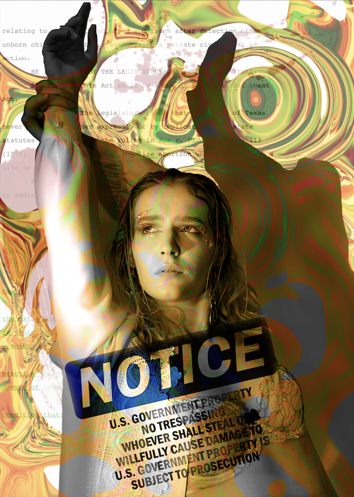
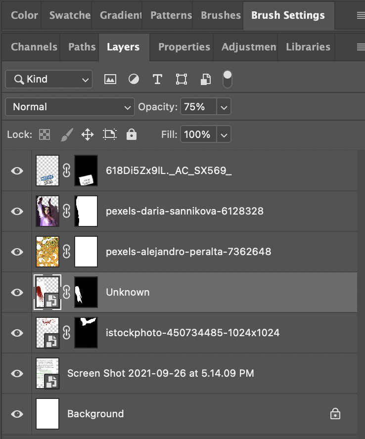
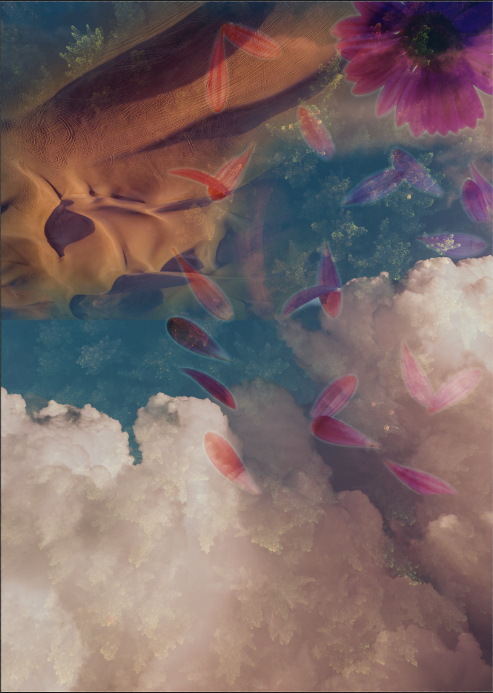

In my first collage, Property of Texas, I am making a commentary in reaction to the recent legislation passed in the state in regards to aborion laws. I wanted the piece to have depth while still staying true to my artistic style which uses a lot of color and dramatic shadow. The base layer that is above the white background is the actual act that was passed which I screenshotted from the Legiscan website. The following two layers are two separate blood splatter patterns I downloaded from google images. The third layer was masked and placed at an opacity of 60% and the fourth was masked as well with an opacity of 75%. The first four layers are not blended at all intentionally to create a base. The fifth layer is an image I downloaded from Pexels that I felt spoke to me and fit well with my personal aesthetic when I saw it. It is set at an opacity of 75% to have a cohesive feel with the text below it. The sixth later is an image of a woman that seems to be in a vulnerable, and pensive position that would evoke the proper emotions I wanted out of the viewer. I got this image from Pexels as well. It is blended with the fifth below it using the Luminosity blend. It accomplished the perfect cohesion between the two layers and added a really nice depth to the woman's shadows. I wanted to add something that translated the dehumanization that women are feeling from this act as it treats female bodies as property more than as a person. I found a government property warning sign on google images for the seventh layer, cut the words and notice from the white base using the select and mask tool, set the opacity to 95%, feathered it to 17.2 px and blended it with the sixth layer using Linear Burn. I chose this blend mode because it deepened the shade of blue in the notice image to one that worked nicely with the greens and oranges in the fifth layer and created nice depth that worked well with the shadows in the image of the woman.
The second collage I made, The Beauty of Killing, I wanted to include elements like fire and water with natural beauty of the world to symbolize the destruction of it all due to global warming, however I did not like what the flames and waves brought to the piece so I went a different direction. Now it is intended to remind the viewer of the beauty within the world that we are putting in danger through unsustainable living. I think the tone of the piece is a somber one and yet majestic which reflects the severity of the situation while also celebrating the earth and what it provides for us. The first layer is the base white background and the second layer is an overhead image of a forest of green trees I downloaded from Pexels. Over that I layered a layer of clouds and sky, also from Pexels, that enhanced the sense of looking down that I thought was really cool. The third layer, the clouds, is at an opacity of 78% and is blended with the second using the Lighten blend mode. I chose Lighten because it created a nice film of color over the green that worked well with the texture of the trees and helped to prevent the clouds from overshadowing the trees entirely. The fourth layer is an image of the desert from Pexels. I really liked the texture of the mountains and masked select dunes from the image that had a lot of interesting depth. It is at an opacity of 87%, is not blended with any layers below it, and is feathered to blend in with the rest of the image nicely. The fifth and final layer is an image of falling petals from a flower I got from Pexels. It is masked at full opacity. I used the Soft Light blend mode. I chose Soft Light because it enhances an ethereal energy to the overall image that I feel was already there by the time I got to the fifth layer. It blends the lights of the lower layers well with the colors of the flower and feels very dreamy. The message of this collage is less evident compared to my first one but I think it works well with what I was trying to speak on.